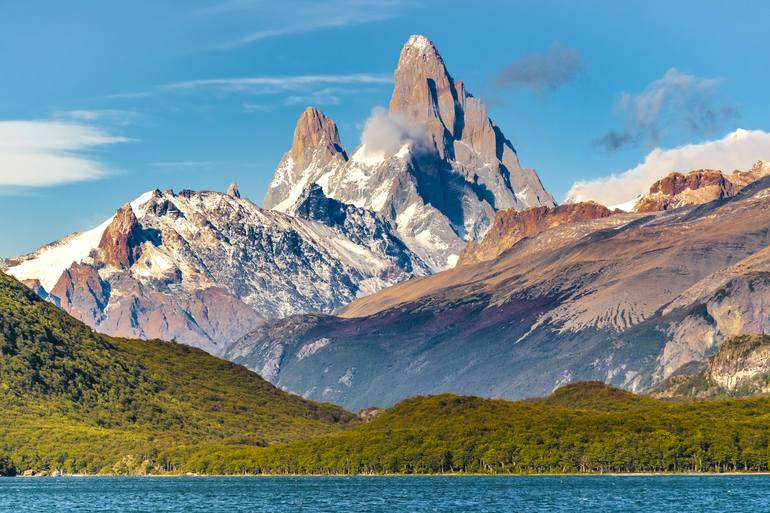

Materia: Geografia de 2do año Colegio: Magnus
La Ecorregión Altos Andes ocupa los sectores de alta montaña al Oeste de la Argentina.
Grupo de investigacion de Geografia!
Escribinos si tenés dudas o consultas del tema:
Email: grupogeo@colegiomagnus.edu.ar
Teléfono: (0387) 6004156788